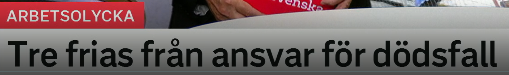
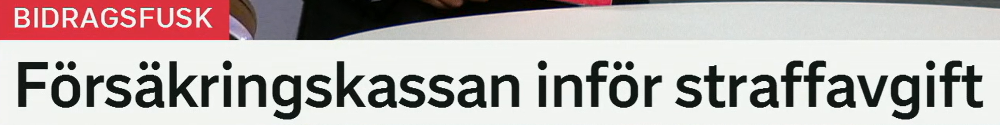
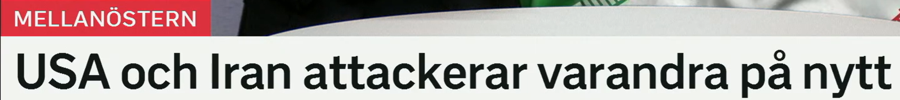
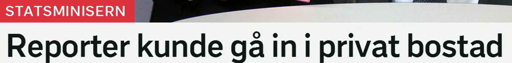

Tre frias från ansvar för dödsfall
三人被免除死亡事件责任/三人获无责判定。
fria 在司法语境中是“宣告无罪、免除责任”。frias från ansvar = 被免除责任。
近义/相关：frikänns 被判无罪，slipper ansvar 免于责任，inte döms 未被判刑。
Mannen frias från misstankarna. 该男子被洗脱嫌疑。
ett ansvar 责任。搭配：ta ansvar 承担责任，ha ansvar för 对……负责。
相关词：skyldighet 义务，ansvarig 负责的，skuld 过错/罪责。
Företaget har ansvar för säkerheten. 公司对安全负责。
ett dödsfall 死亡事件、死亡病例。常用于事故、医疗、统计。
相关词：olycka 事故，omkomma 遇难，dödsoffer 死亡受害者。
司法标题
X frias från ansvar för Y = X 被免除对 Y 的责任。

Försäkringskassan inför straffavgift
社会保险署引入罚款费用。
införa 是引入、实施、推行。注意 inför 也可以是介词“在……之前”，这里是动词。
近义词：introducerar 引入，börjar med 开始采用，genomför 实施，lanserar 推出。
Kommunen inför nya regler. 市政府实施新规则。
straff 惩罚 + avgift 费用，合起来是罚费。
相关词：böter 罚款，sanktionsavgift 制裁性罚费，vite 强制罚款。
Företaget måste betala en avgift. 公司必须缴纳费用。
bidrag 补助 + fusk 作弊/欺诈，指骗取福利补助。
相关词：bedrägeri 诈骗，felaktiga utbetalningar 错误发放，kontroll 审查。
行政措施
Myndighet inför X = 某机构推行 X。新闻中常见 inför krav、inför regler。

USA och Iran attackerar varandra på nytt
美国和伊朗再次互相攻击。
attackera 攻击、袭击，可用于军事、政治言论、网络等。
近义词：angripa 攻击，anfalla 进攻，beskjuta 炮击，slå till mot 突袭。
Länderna attackerar varandra med drönare. 两国用无人机互相攻击。
表示彼此、互相。搭配：anklaga varandra 互相指责，hjälpa varandra 互相帮助。
表示“再次、重新”。
近义表达：igen 再次，åter 再度，än en gång 又一次。
反复发生
göra något på nytt = 再次做某事。标题中强调冲突又一次升级。

Reporter kunde gå in i privat bostad
记者能够进入私人住宅。
原形 kunna 能够；kunde 表示过去能够。
相关表达：hade möjlighet att 有机会，lyckades 成功做到，fick tillgång till 获得进入权限。
进入某处。对比 gå ut ur 从……出去。
Hon gick in i huset. 她走进房子。
privat 私人的；en bostad 住房、住宅。
相关词：hem 家，lägenhet 公寓，villa 独栋住宅，privat område 私人区域。
进入权限
kunde gå in i X = 能够进入 X。适合描述安全漏洞、通行权限等。
复习表：重点词 + 近义词 + 高频用法
| 关键词 | 近义/相关词 | 高频搭配 |
|---|---|---|
| frias | frikänns, slipper ansvar, inte döms | frias från ansvar, frias från misstanke |
| ansvar | skyldighet, skuld, ansvarig | ta ansvar, ha ansvar för, ansvar för dödsfall |
| införa | introducera, genomföra, lansera | inför regler, inför avgift, inför krav |
| på nytt | igen, åter, än en gång | attackera på nytt, börja på nytt |
| bostad | hem, lägenhet, villa | privat bostad, gå in i bostad |
练习 1
说“三人被免除责任”。提示：Tre frias från ansvar.
练习 2
把“政府引入新规则”译成瑞典语。提示：Regeringen inför nya regler.
练习 3
说“他们再次互相攻击”。提示：De attackerar varandra på nytt.